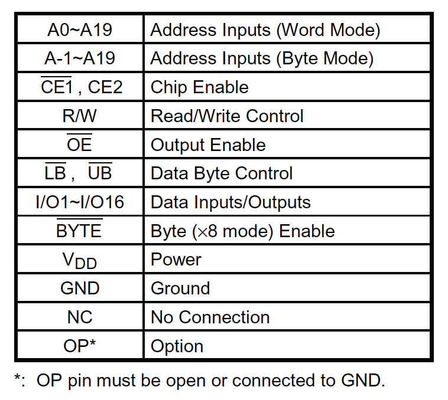
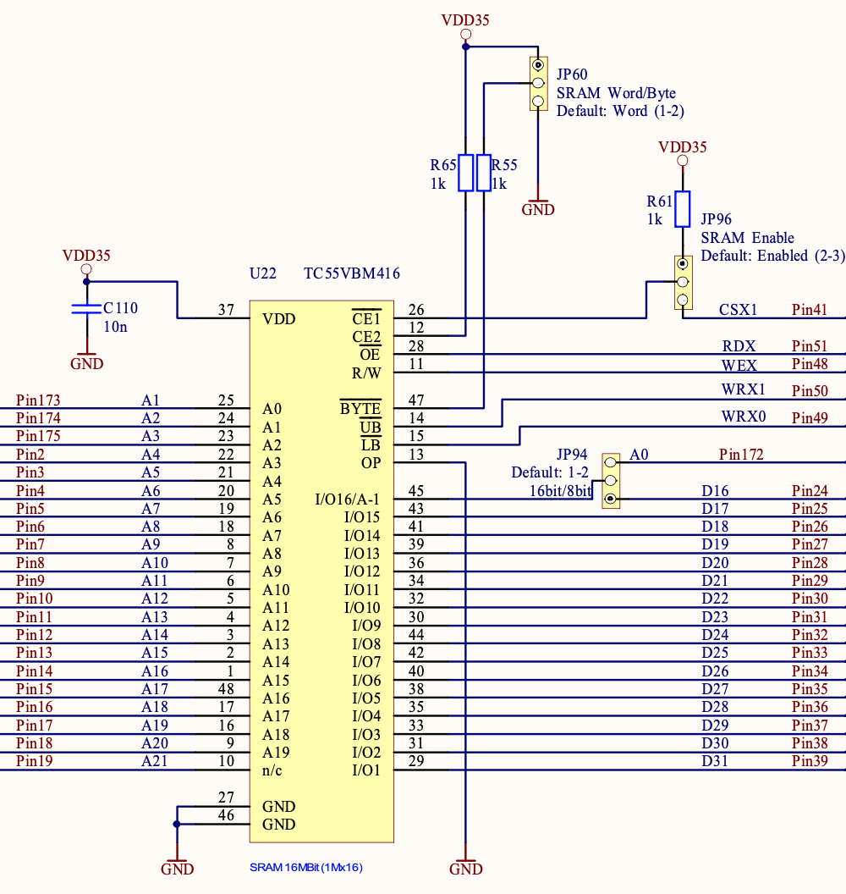

在计算机网络设备和嵌入式系统的研发中，常常需要硬件和软件设计人员紧密配合，以实现精准而有效的平台支持。特别地，对于需要数据存取的设备，了解设备的基本工作原理、控制和数据线路的连接方式及信号流程，对于可靠的软件设计和实现必不可少。否则，如果硬件电路设计或软件程序编写基于错误的假定，将需要更多的时间调试、排错和补救，可能严重影响项目的进度。
Low-level programming is good for the programmer's soul. — John Carmack （约翰·卡马克，美国电玩游戏程序员、id Software的创始人之一）
存取模式
这里以东芝TC55VBM416静态随机存取存储器（Static Random Access Memory，简称SRAM）为例，说明系统开发中硬软件协同工作的重要性。由于SRAM有快速和极低功耗的特点，它非常适合用于低储存密度的数据保存应用。比如使用电池供电，SRAM可以用来储存系统配置文件等，达到等同于非易失性随机存取存储器（Non-Volatile RAM，简称NVRAM）的功效。TC55VBM416 SRAM的存储容量为16,777,216 (\(16\times2^{20}\) ) 比特位，提供1,048,576 (1M) 个16位字存取或2,097,152 (2M) 个8位字节存取单元。
那么，我们如何在系统硬件设计中选择哪一种存取模式呢？答案就在TC55VBM416的数据表 （datasheet）里。参考数据表中对48个针脚的功能描述：

结合数据表中操作模式的说明，TC55VBM416的存取模式是这样工作的：当\(\overline{\mathsf{BYTE}}\) 针脚的输入为高电平时，芯片执行16位字存取模式，针脚A0~A19的输入可用来寻址1M地址空间，16比特数据通过针脚I/O1~I/O16读写；当\(\overline{\mathsf{BYTE}}\) 针脚的输入为低电平时，激活8位字节存取模式，这时针脚A-1和A0~A19组合一同寻址2M的地址空间，单字节数据通过针脚I/O1~I/O8读写。注意I/O16与A-1实际是一个针脚复用，因为这两种工作模式互斥，所以不会冲突。
硬件设计
了解了TC55VBM416的工作原理，再来看看嵌入式系统硬件设计是如何使用它的。网上搜索到工业及车载应用中使用的富士通MB91F467C微控制器，其硬件系统设计就包括了东芝TC55VBM416 SRAM芯片，相关的电路图截取如下：

从此电路图可以看出：
系统地址线A1～A20接到SRAM针脚A0~A19
系统数据线D31～D17接到SRAM针脚I/O1~I/O15
跳线器JP94选择系统地址线A0或数据线D16连到I/O16/A-1针脚
跳线器JP60选择高电平（VDD35）或低电平（GND）连到\(\overline{\mathsf{BYTE}}\) 针脚
很明显，这一设计由跳线器决定SRAM的存取模式。当JP60设定上端连通高电平到\(\overline{\mathsf{BYTE}}\) 针脚时，相应的JP94应该设定下端连通D16到I/O16针脚，芯片执行16位字存取。由于系统地址线A0不连接到SRAM，软件系统将使用偶寻址存取双字节16比特数据。反之，当JP60设定下端连通低电平到\(\overline{\mathsf{BYTE}}\) 针脚时，相应的JP94应该设定上端连通系统地址线A0到A-1针脚，芯片执行8位字节存取。这时系统地址线A0～A19全部用来寻址，程序可以直接存取单字节8比特数据。
软件支持
对于平台软件的开发人员，如果不事先审核系统硬件功能规范、不与硬件设计工程师沟通好存储设备的存取模式，就会出现意想不到的错误，耽误工程的进展。设想对于上面的硬件设计，系统默认SRAM的存取模式为16位，而软件程序员并不知情，继续沿用单字节8寻址的代码读写SRAM中的配置信息：
1 2 3 4 5 6 7 8 9 inline char read_conf_byte (char *confddr) return *confaddr } inline void write_conf_byte (char *confddr, char c) { *confaddr = c }
那么当confaddr为奇数时，实际读写的地址为confaddr-1，因为系统地址线A0不参与寻址。这样的程序测试时当然会错误百出，表现为有些数据对、有些数据错，而写对的数据有时也可能读错等等。解决的办法是同时更改两个跳线器，将存取模式设置为8位。
在类似这种情况下，如果硬件设计不能动态调整，就需要修改软件支持不同的存取模式。对于16位存取接口，要更新单个字节，可以先读取对应偶地址的双字节，再根据原始的写请求地址及系统的字节顺序 （Endianness）决定要替换高低哪一个字节，更新完毕后将16位数据一步写回对应偶地址。这一算法简单表述如下：
用给定地址计算出对应的偶地址，然后从该地址读取双字节
如果给定地址为奇数，同时为大端序；或给定地址为偶数，同时为小端序
将双字节数据低8位清零，再写入单个字节
将新的双字节数据写入对应的偶地址
如果给定地址为偶数，同时为大端序；或给定地址为偶数，同时为大端序
将双字节数据高8位清零，再写入单个字节
将新的双字节数据写入对应的偶地址
据此我们可以重写write_conf_byte()函数，使之同时支持8位和16位两种写入模式：
1 2 3 4 5 6 7 8 9 10 11 12 13 14 15 16 17 18 19 20 21 22 23 24 25 26 27 typedef enum { CONF_8BIT_ACCESS = 1 , CONF_16BIT_ACCESS = 2 } conf_access_type; int test_endian () int x = 1 ; return *((char *)&x); } void write_conf_byte (char *confaddr, char c, conf_access_type type) ushort *d_16; if (type == CONF_16BIT_ACCESS) { d_16 = (ushort *)((uintptr_t )confaddr & (~0x1 )); if ((((uintptr_t )confaddr & 0x01 ) && (test_endian() == 0 )) || ((((uintptr_t )confaddr & 0x01 ) == 0 ) && test_endian())) { *d_16 = (*d_16 & 0xFF00 ) | c; } else { *d_16 = (*d_16 & 0x00FF ) | (c<<8 ); } } else { *confaddr = c; } }
这里还给出另一个复制字节序列到基于SRAM的配置存储地址的函数confcpy()。它也支持8位和16位两种存取接口类型，但只工作于大端序的系统环境。作为练习，读者可自行修改代码让它也可以在小端序系统中运行。
1 2 3 4 5 6 7 8 9 10 11 12 13 14 15 16 17 18 19 20 21 22 23 24 25 26 27 28 29 30 31 32 33 34 35 36 37 38 39 40 41 42 void * confcpy (char *dst, char *src, int len, int type) uchar *s = src; uchar *d = dst; ushort *d_16 = (ushort *)((uintptr_t )d & ~0x1 ); if (!s || !d) { return (NULL ); } if (type == CONF_16BIT_ACCESS) { if ((uintptr_t )d & 0x01 ) { *d_16 = (*d_16 & 0xFF00 ) | *s; s++; d_16++; len--; } while (len >= 2 ) { *d_16 = (*s<<8 ) | *((uchar *)(s+1 )); d_16++; s += 2 ; len -= 2 ; } if (len ==1 ) { *d_16 = (*d_16 & 0x00FF ) | ((*s)<<8 ); } } else { while (len > 0 ) { *d++ = *s++; len--; } } return (dst); }
测试程序
最后，下面一段小程序可用来测试write_conf_byte()函数。它定义了两个4字节的缓冲区buffer8和buffer16，分别用来仿真8位和16位存取的存储设备。程序用一个for循环调用write_conf_byte()函数逐个写入4个单字节的数据，调用时对应不同缓冲区使用不同的存取类别参数（CONF_8BIT_ACCESS和CONF_16BIT_ACCESS）。写入完毕后使用断言（assert()）函数比较二者数值是否一致，最后打印缓冲区内容：
1 2 3 4 5 6 7 8 9 10 11 12 13 14 15 16 int main () char *buffer8, *buffer16; printf ("%s Endian system\n" , test_endian() ? "Little" : "Big" ); buffer8 = calloc (4 , 1 ); buffer16 = calloc (4 , 1 ); for (int i=0 ; i<4 ; i++) { write_conf_byte(buffer8+i, (char )i, CONF_8BIT_ACCESS); write_conf_byte(buffer16+i, (char )i, CONF_16BIT_ACCESS); } assert(*(uint *)buffer8 == *(uint *)buffer16); printf ("Buffer content: 0x%08x\n" , *(uint *)buffer16); return 0 ; }
在Intel 64位虚拟机加载Ubuntu 20.04的环境里，编译链接后程序运行的结果如下：
1 2 3 4 5 6 7 8 9 10 11 12 13 14 15 16 $ uname -a Linux zixi-VirtualBox 5.8.0-48-generic $ gcc -v Using built-in specs. COLLECT_GCC=gcc COLLECT_LTO_WRAPPER=/usr/lib/gcc/x86_64-linux-gnu/9/lto-wrapper OFFLOAD_TARGET_NAMES=nvptx-none:hsa OFFLOAD_TARGET_DEFAULT=1 Target: x86_64-linux-gnu Configured with: ../src/configure -v --with-pkgversion='Ubuntu 9.3.0-17ubuntu1~20.04' --with-bugurl=file:///usr/share/doc/gcc-9/README.Bugs --enable-languages=c,ada,c++,go,brig,d,fortran,objc,obj-c++,gm2 --prefix=/usr --with-gcc-major-version-only --program-suffix=-9 --program-prefix=x86_64-linux-gnu- --enable-shared --enable-linker-build-id --libexecdir=/usr/lib --without-included-gettext --enable-threads=posix --libdir=/usr/lib --enable-nls --enable-clocale=gnu --enable-libstdcxx-debug --enable-libstdcxx-time=yes --with-default-libstdcxx-abi=new --enable-gnu-unique-object --disable-vtable-verify --enable-plugin --enable-default-pie --with-system-zlib --with-target-system-zlib=auto --enable-objc-gc=auto --enable-multiarch --disable-werror --with-arch-32=i686 --with-abi=m64 --with-multilib-list=m32,m64,mx32 --enable-multilib --with-tune=generic --enable-offload-targets=nvptx-none=/build/gcc-9-HskZEa/gcc-9-9.3.0/debian/tmp-nvptx/usr,hsa --without-cuda-driver --enable-checking=release --build=x86_64-linux-gnu --host=x86_64-linux-gnu --target=x86_64-linux-gnu Thread model: posix gcc version 9.3.0 (Ubuntu 9.3.0-17ubuntu1~20.04) $ gcc -o support-16bit-access support-16bit-access.c $ ./support-16bit-access Little Endian system Buffer content: 0x03020100
这一结果正确。由于系统是小端序的，先写入的为低位字节，所以结果以32位整数表示为0x03020100。
在同一系统中怎么测试大端序的场景呢？这就需要安装交叉编译的工具链了。如果选用大端序的MIPS处理器，可以安装对应的Ubuntu软件包gcc-multilib-mips-linux-gnu、gcc-mips-linux-gnu和qemu-user，支持以MIPS为目标架构的程序编译链接和仿真运行：
1 2 3 4 5 6 7 8 9 10 11 12 13 14 $ sudo apt-get install gcc-multilib-mips-linux-gnu gcc-mips-linux-gnu qemu-user ... $ mips-linux-gnu-gcc -v Using built-in specs. COLLECT_GCC=mips-linux-gnu-gcc COLLECT_LTO_WRAPPER=/usr/lib/gcc-cross/mips-linux-gnu/9/lto-wrapper Target: mips-linux-gnu Configured with: ../src/configure -v --with-pkgversion='Ubuntu 9.3.0-17ubuntu1~20.04' --with-bugurl=file:///usr/share/doc/gcc-9/README.Bugs --enable-languages=c,ada,c++,go,d,fortran,objc,obj-c++,gm2 --prefix=/usr --with-gcc-major-version-only --program-suffix=-9 --enable-shared --enable-linker-build-id --libexecdir=/usr/lib --without-included-gettext --enable-threads=posix --libdir=/usr/lib --enable-nls --with-sysroot=/ --enable-clocale=gnu --enable-libstdcxx-debug --enable-libstdcxx-time=yes --with-default-libstdcxx-abi=new --enable-gnu-unique-object --disable-libitm --disable-libsanitizer --disable-libquadmath --disable-libquadmath-support --enable-plugin --with-system-zlib --without-target-system-zlib --enable-libpth-m2 --enable-multiarch --disable-werror --enable-multilib --with-arch-32=mips32r2 --with-fp-32=xx --with-lxc1-sxc1=no --enable-targets=all --with-arch-64=mips64r2 --enable-checking=release --build=x86_64-linux-gnu --host=x86_64-linux-gnu --target=mips-linux-gnu --program-prefix=mips-linux-gnu- --includedir=/usr/mips-linux-gnu/include Thread model: posix gcc version 9.3.0 (Ubuntu 9.3.0-17ubuntu1~20.04) $ mips-linux-gnu-gcc -o support-16bit-access-mips support-16bit-access.c -static $ ./support-16bit-access-mips Big Endian system Buffer content: 0x00010203
上面的记录显示，使用安装好的mips-linux-gnu-gcc编译器，成功编译链接同一个C程序。运行结果打印出大端序的系统信息，以及正确的缓冲区数据内容。注意到编译链接的命令行使用了静态链接选项-static，这是必须的。因为此时宿主系统为Intel x86_64架构，如果使用动态链接，程序将无法找到相应的MIPS动态链接库文件，运行失败。
比较两个生成的可执行文件，可看到MIPS文件support-16bit-access-mips远远大于x86_64文件support-16bit-access。再使用file命令检查二者，印证了support-16bit-access-mips确实是MIPS GCC静态链接生成的：
1 2 3 4 5 6 7 8 $ ls -al support-16bit-access* -rwxrwxr-x 1 zixi zixi 16984 Apr 11 19:31 support-16bit-access -rw-rw-r-- 1 zixi zixi 1282 Apr 11 19:30 support-16bit-access.c -rwxrwxr-x 1 zixi zixi 611592 Apr 11 19:31 support-16bit-access-mips $ file support-16bit-access support-16bit-access: ELF 64-bit LSB shared object, x86-64, version 1 (SYSV), dynamically linked, interpreter /lib64/ld-linux-x86-64.so.2, BuildID[sha1]=883f851beccb99c970c0d0924ff23479080f12b1, for GNU/Linux 3.2.0, not stripped $ file support-16bit-access-mips support-16bit-access-mips: ELF 32-bit MSB executable, MIPS, MIPS32 rel2 version 1 (SYSV), statically linked, BuildID[sha1]=dceaf3d5f41f3208046b5a56b1187f03f8f63114, for GNU/Linux 3.2.0, not stripped
还可以调整系统配置，直接运行MIPS GCC动态链接生成的可执行文件，详细见此文：Transparently running binaries from any architecture in Linux with QEMU and binfmt_misc
完整的程序可点击这里下载：support-16bit-access.c.gz